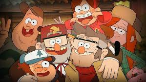

Meet the Characters
Gravity Falls is not just a show about mysteries; it's also about the characters who navigate those mysteries. Each character brings their own unique personality, quirks, and story arcs to the series. From the curious Dipper Pines to the enigmatic Bill Cipher, the characters are what make Gravity Falls truly special.
